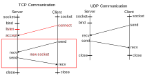
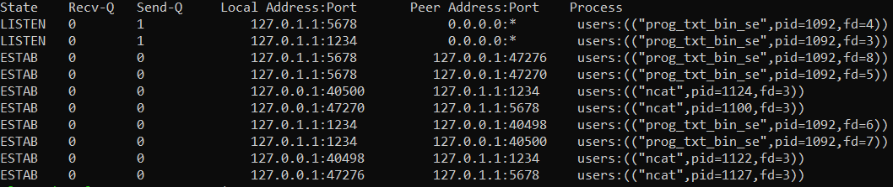

Network learnings
In this section, I go more in depth about the concepts I have learnt and the networking tools I used during the lab sessions.
1. Parallelism
1.1 Managing resources with pipes
A file descriptor (fd) is a number which identifies a specific pipe. A pipe is a key concept in communication systems. It is a way to write or read from various ressources. It is also a way to communicate between processes. By default, there are already 3 file descriptors open: STDIN_FILENO, STDOUT_FILENO, STDERR_FILENO. To write in a specific pipe, we use the C function write and to read from a specific pipe, we use the C function read.
It is important to note that in an Unix-like environment, every is considered as being a file. In the socket section, we will see that fil descriptors are used to identify sockets.
1.2 Process
A process (also called task or thread) can be seen as a function that executes a particular task. A program is a collection of tasks. The point of threads is that, we may need to run several in parallel to achieve different tasks simultaneously. To create a process direclty from the main process (or any other process), we use the C function fork. A new thread, completely independent from the original one is created. The new process is called the child process and the original process is called the parent process. Each process is identified by unique PID (Process IDentifier). The child process is attributed a new PID (0) but its parent process keeps its PID.
1.3 Communication inter-process
Now that we have seen how to write to or read from a pipe (identified by a file descriptor) and we are more familiar with the notion of thread, we can bind them together and try to have a pipe connect 2 processes. One would read from the pipe and the second one would write to it. To do so, we use the C function pipe.
We can also make a pipe redirection (or process overlapping). This a way of linking 2 file descriptors. To do so, we use the C function dup2. The first argument is the file descriptor we want to duplicate and the second argument is the file descriptor we want to link it to.
To open a pipe in Bash, we use the '|' symbol. It redirects the output (STDOUT_FILENO) of the first command to the input (STDOUT_FILENO) for the next command. For instance, ls | grep "file" will list all the files in the current directory and then search for the word "file" in the output of the previous command.
1.4 Issues
This Multi-threading paradigm brings with it some issues such as the starvation problem, in which a thread monopolizes the resources. Another issue is the deadlock problem, in which two threads are waiting for each other to finish their tasks. To counter these issues, we use mutexes (mutual exclusion) and semaphores. They play the role of guardian of the critical or shared resource with a system of locks and keys.
2. Sockets
A socket is a communication point that binds an IP address and a port number. There exist sockets at different levels of the OSI model. We will see in the encryption session that raw sockets are used to send and receive packets at the network layer. UDP (User Datagram Protocol) is a connectionless protocol, in which the sender does not wait for client's acknowledgment. TCP (Transport Communication Protocol) is a connection-oriented protocol, in which the sender does wait for client's acknowledgment. If it does not get any acknowledgment back, it will send the packet again.
The flow charts above describes a simple case of communication between a server and a client for TCP and UDP. We can notice that these protocols are slighlty different. Indeed, TCP requires one step more than UDP to establish a connection between the client and the server. This involves that after having created the socket and bound it, the server listens to any connection request on a listen socket. Once a request received, the server accepts and creates a new socket, called the dialogue socket (circled in red) provided by the client. Now, both the server and the client have a socket to communicate with each other.
By issuing the command ss -pan[u/t] in the terminal, we can see all our current UDP and TCP connections. In lab sessionw, we created both a UDP and TCP server and a UDP and TCP client in C. The image below shows all TCP connections my computer after running a local server and some clients with ncat. Since I only have my laptop to make tests, I had to run the TCP server and TCP clients on the same machine.
First, we can notice the LISTEN TCP servers at ports 1234 (txt communication) and 5678 (binary communication). They are identified by a file descriptor (fd), which means that in linux writing in a file and in a socket works the same. The PID (Process IDentifier) identifies the thread that runs the server.
Encryption and security
We only learnt fundamentals: OpenSSL, Certificates, private/public key, etc.